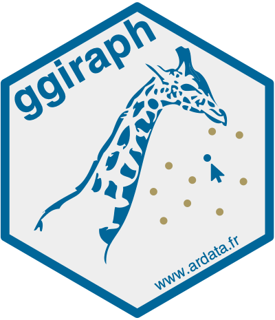
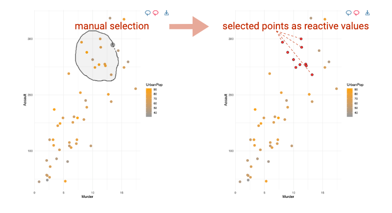

ggiraph makes ‘ggplot’ graphics interactive.
Overview
 ggiraph is a tool that allows you to create dynamic ggplot graphs. This allows you to add tooltips, hover effects and JavaScript actions to the graphics. The package also allows the selection of graphical elements when used in shiny applications.
Interactivity is added to ggplot geometries, legends and theme elements, via the following aesthetics:
-
tooltip: tooltips to be displayed when mouse is over elements. -
onclick: JavaScript function to be executed when elements are clicked. -
data_id: id to be associated with elements (used for hover and click actions)
Why use {ggiraph}
- You want to provide your readers with more information than the basic information available; you can display a tooltip when the user’s mouse is on a graphical element, you can also visually animate elements with the same attribute when the mouse passes over a graphical element, and finally you can link a JavaScript action to the click, such as opening a hypertext link.
- You want to allow users of a Shiny application to select graphical elements; for example, you can make the points of a scatter plot selectable and available as a reactive value from the server part of your application. With Shiny, ggiraph allows interaction with graph elements, legends elements, titles and ggplot theme elements from the server part; each selection is available as a reactive value.

Under the hood, ggiraph is an htmlwidget and a ggplot2 extension. It allows graphics to be interactive, by exporting them as SVG documents and using special attributes on the various elements.
Usage
With R and R Markdown
The things you need to know to create an interactive graphic :
- Instead of using
geom_point, usegeom_point_interactive, instead of usinggeom_sf, usegeom_sf_interactive… Provide at least one of the aestheticstooltip,data_idandonclickto create interactive elements. - Call function
girafewith the ggplot object so that the graphic is translated as a web interactive graphics.
library(ggplot2)
library(ggiraph)
data <- mtcars
data$carname <- row.names(data)
gg_point = ggplot(data = data) +
geom_point_interactive(aes(x = wt, y = qsec, color = disp,
tooltip = carname, data_id = carname)) +
theme_minimal()
girafe(ggobj = gg_point)With Shiny
- If used within a shiny application, elements associated with an id (
data_id) can be selected and manipulated on client and server sides. The list of selected values will be stored in in a reactive value named[shiny_id]_selected.

Available interactive layers
They are several available interactive geometries, scales and other ggplot elements. Almost all ggplot2 elements can be made interactive with ggiraph. They are all based on their ggplot version, same goes for scales and the few guides: geom_point_interactive(), geom_col_interactive(), geom_tile_interactive(), scale_fill_manual_interactive(), scale_discrete_manual_interactive(), guide_legend_interactive(), …
You can also make interactive annotations, titles and facets (see help(interactive_parameters)).
Installation
Get development version on github
devtools::install_github('davidgohel/ggiraph')Get CRAN version
install.packages("ggiraph")Resources
Online documentation
The help pages are located at https://davidgohel.github.io/ggiraph/.
Getting help
If you have questions about how to use the package, visit Stackoverflow and use tags ggiraph and r Stackoverflow link! We usually read them and answer when possible.
Contributing to the package
Bug reports
When you file a bug report, please spend some time making it easy for me to follow and reproduce. The more time you spend on making the bug report coherent, the more time I can dedicate to investigate the bug as opposed to the bug report.
Contributing to the package development
A great way to start is to contribute an example or improve the documentation.
If you want to submit a Pull Request to integrate functions of yours, provide if possible:
- the new function(s) with code and roxygen tags (with examples)
- a new section in the appropriate vignette that describes how to use the new function
- corresponding tests in directory
inst/tinytest.
By using rhub (run rhub::check_for_cran()), you will see if everything is ok. When submitted, the PR will be evaluated automatically with Github Action and you will be able to see if something broke.